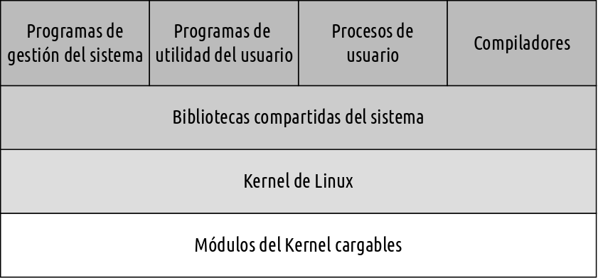
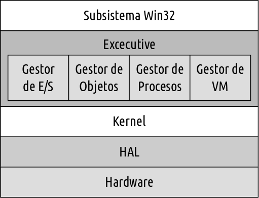

Sistemas Operativos
de Propósito General
Emmanuel Beneventano
Santiago Rojo
Hernán Ruiz
Fernando Scorpiniti
Temario
- Introducción
- Arranque
- Estructura del sistema
- Administación de procesos
- Administación de memoria
- Sistema de archivos
- Seguridad
Introducción
Introducción
- Sistemas operativos analizados
- Historia
- Diferencias y mejoras entre versiones
Arranque
Arranque
Estructura del sistema
Estructura del sistema
| Linux |
Windows |
| Utilidades del sistema |
Executive |
| Bibliotecas del sistema |
Kernel |
| Kernel |
HAL |
Estructura del sistema : Linux

Estructura del sistema : Windows

Administración de procesos
Administración de procesos : Linux
- Gestión
- Procesos y Hebras
- Planificación
- Sincronización
- Comunicación interprocesos
- Multiprocesamiento
Linux: Gestión
- Modelo de procesos
fork() y exec()
- Contexto del proceso: Se divide en tres secciones:
- Identidad del proceso
- Entorno
- Contexto
Linux: Gestión
- Identidad del proceso
- Id
- Credenciales
- Personalidad
- Entorno:
- Se hereda del proceso padre
- Compuesto por dos vectores: El vector de argumentos y el vector de entornos
Linux: Gestión
- Contexto
Incluye:
- Contexto de planificación
- Contabilidad de recursos
- Tabla de archivos
- Contexto del sistema de archivos
- Tabla de rutina de tratamiento de señales
- Contexto de memoria virtual
Linux: Procesos y Hebras
- Llamada al sistema "
clone(): Es la llamada que permite la creación de hebras."
- Indicadores: Determinan el grado de compartición entre las tareas padre e hija.
Linux: Planificación
Linux utiliza dos algoritmos de planificación:
- Algoritmo de tiempo compartido: utilizado para planificar de manera equitativa multiples procesos.
- Algoritmo para tareas en tiempo real: las prioridades son mas importantes que la equidad.
Linux: Planificación
El kernel de Linux utiliza las llamadas "Colas de ejecución" para mantener una lista de todas las tareas.
Contiene dos matrices de prioridad:
- Matriz de tareas activas.
- Matriz de tareas caducadas.
Linux: Planificación
Linux implementa dos clases de planificación en tiempo real:
- FCFS (First Come, First Served).
- Planificación por turnos.
Linux: Sincronización del kernel
Una solicitud para ejecución en modo Kernel se produce si:
- Un programa en ejecución pide un servicio del Sistema Operativo.
- Un controlador de dispositivo genera una interrupción y el kernel comience a ejecutar una rutina de tratamiento de la misma.
Linux: Sincronización del kernel
Bloqueos monoprocesador y multiprocesador en Linux.
- Sistema de activación del mecanismo de apropiación del kernel.
- Cerrojos de bucle sin fin.
Otra técnica para tratar interrupciones: Hardware de control de interrupciones.
Se separa a las rutinas de servicio de interrupciones en dos secciones:
Linux: Multiprocesamiento
El multiprocesamiento simétrico de Linux permite que una serie de procesos separados, se ejecuten en diferentes procesadores.
- Se creó un único cerrojo de bucle sin fin del kernel para permitir que estuvieran activos concurrentemente en el kernel múltiples procesos.
Administración de procesos : Windows
- Planificación
- Hebras
- Fibras
- Comunicación interprocesos
- Sincronización
- Multiprocesamiento
Administración de memoria
Administración de memoria: Linux
- Memoria física
- Memoria virtual
- Intercambio y Paginación
- Ejecución y carga de programas de usuario
Administración de memoria: Windows
- Memoria virtual
- Working Set
- Intercambio y Paginación
- ¿Ejecución y carga de programas de usuario?
Sistemas de archivos
Sistema de archivos
Seguridad
Seguridad: Linux
- Control de acceso
- Autenticación
Seguridad: Windows
- Subsistema de inicio de sesión y seguridad